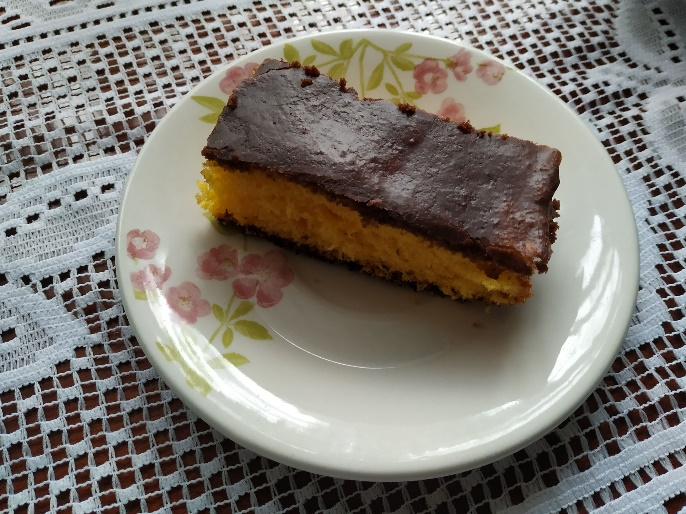

Bolo de Cenoura
Ingredientes
- Massa:
- 4 ovos
- 2 cenouras grandes
- 1 xíc. de óleo
- 2 xíc. de farinha de trigo
- 2 xíc. de açúcar
- 1 colher de fermento químico
- Cobertura:
- 3 colheres de leite
- 3 colheres de margarina
- 6 colheres de chocolate em pó
- 6 colheres de açúcar
Modo de Preparo
Bater a claras em neve e reservar. Bater no liquidificador as gemas, o óleo, o açúcar e as cenouras raladas. Despejar numa tigela e misturar com o trigo, as claras em neve e o fermento. Assar numa forma untada, depois de assado deixar esfriar e passar a cobertura.
Colocar todos os ingredientes num panela e levar ao fogo mexendo sempre até começar a desgrudar do fundo da panela e em seguida colocar sobre o bolo.
